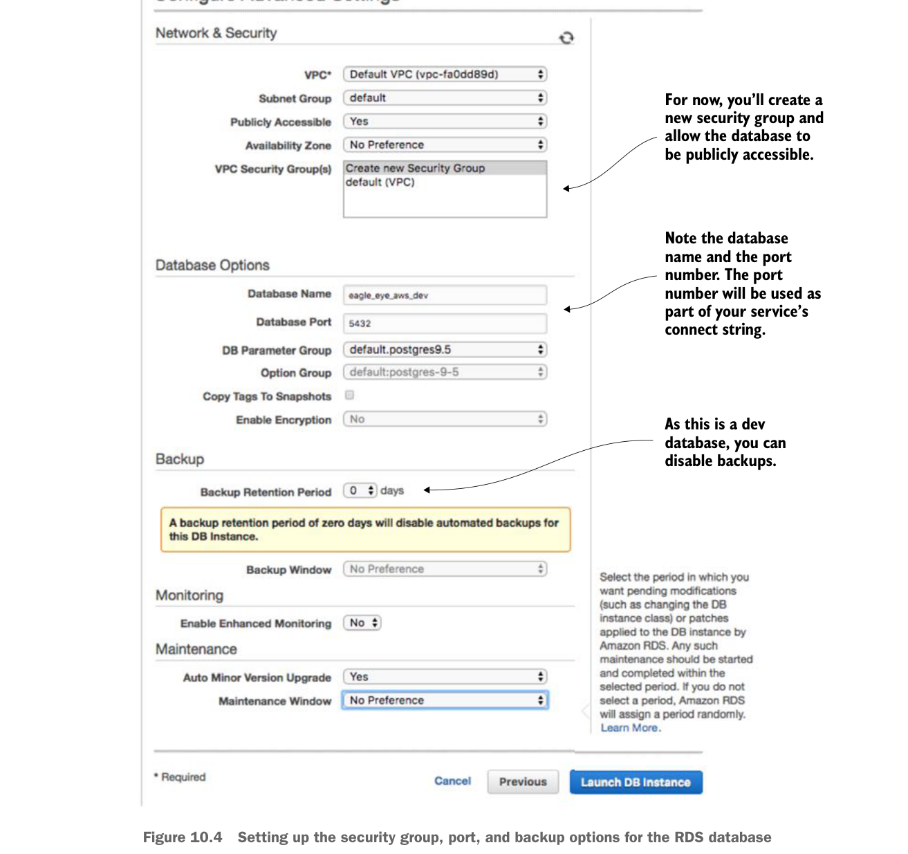

Bước cuối cùng của trình hướng dẫn là thiết lập nhóm bảo mật cơ sở dữ liệu, thông tin cổng và thông tin sao lưu cơ sở dữ liệu. Hình 10.4 cho thấy nội dung màn hình này.

Tạm thời, bạn sẽ tạo một nhóm bảo mật mới và cho phép cơ sở dữ liệu được truy cập công khai.
Hãy ghi chú tên cơ sở dữ liệu và số cổng. Số cổng sẽ được dùng như một phần của chuỗi kết nối dịch vụ.
Vì đây là cơ sở dữ liệu dev, bạn có thể tắt sao lưu.
Thiết lập nhóm bảo mật, cổng và tùy chọn sao lưu cho cơ sở dữ liệu RDS